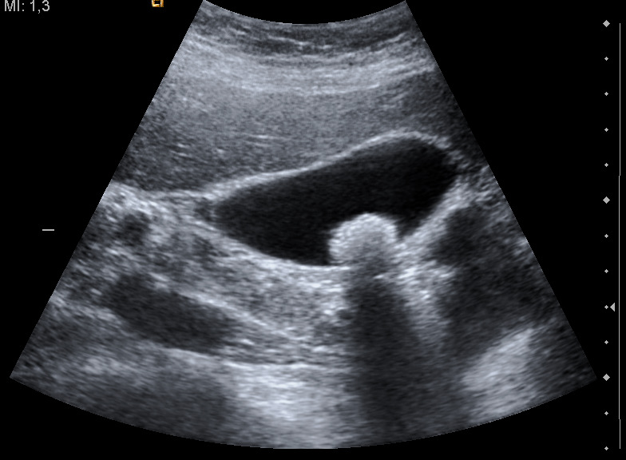

Ficha del catálogo
Litiasis vesicular (piedras en la vesícula)
- Sistema
- Digestivo
- Modalidad
- US
- Región
- Abdomen
- Dificultad
- Básico
Presencia de cálculos dentro de la vesícula biliar, una condición muy frecuente y en muchos casos asintomática. El ultrasonido tiene una sensibilidad superior al 95% para detectarla, muy por encima de cualquier otro método.
Técnica
Paciente en ayuno para que la vesícula esté distendida. Se explora en decúbito supino y también en decúbito lateral izquierdo, posición que permite comprobar si las imágenes se desplazan.
Qué observar
- Imagen ecogénica (brillante) dentro de la luz vesicular
- Sombra acústica posterior, que es la banda oscura que se proyecta por detrás del cálculo
- Movilidad al cambiar la posición del paciente, dato que diferencia un cálculo de un pólipo (el pólipo no se mueve ni deja sombra)
- Grosor de la pared vesicular, normalmente menor de 3 mm (su engrosamiento sugiere colecistitis)
- Signo de Murphy ecográfico: Dolor selectivo al presionar con el transductor sobre la vesícula
- Calibre del colédoco, normalmente menor de 6 mm, cuya dilatación indica obstrucción de la vía biliar
Hallazgos
Imagen ecogénica móvil en el interior de la vesícula biliar con sombra acústica posterior, característica de litiasis.
Perlas
La tríada del cálculo es: Brillante, con sombra y móvil. Si falta la movilidad hay que pensar en pólipo o en un cálculo impactado en el cuello vesicular, y si falta la sombra probablemente sea barro biliar en lugar de un cálculo verdadero.
Diagnóstico diferencial
- Pólipo vesicular
- Es una imagen ecogénica adherida a la pared que no se desplaza con los cambios de posición y no proyecta sombra acústica; los mayores de un centímetro pueden mostrar flujo con Doppler.
- Barro biliar
- Aparece como material ecogénico que forma un nivel dependiente de la gravedad, sin sombra acústica y de límites difusos.
- Colecistitis aguda
- A la litiasis se suman engrosamiento de la pared por encima de tres milímetros, líquido perivesicular, distensión y signo de Murphy ecográfico positivo.
- Adenomiomatosis
- La pared muestra pequeños espacios quísticos con artefactos en cola de cometa producidos por los cristales de colesterol en los senos de Rokitansky-Aschoff.
- Vesícula en porcelana
- La pared está calcificada y produce una sombra acústica que sigue su contorno curvo, en lugar de una sombra puntual dentro de la luz.
- Coledocolitiasis
- El cálculo se localiza en la vía biliar principal, que aparece dilatada por encima de seis milímetros, y con frecuencia se acompaña de ictericia.
Simuladores
- El gas del duodeno adyacente a la vesícula produce ecos brillantes con sombra sucia que simulan cálculos (su forma cambia entre cortes y no se desplaza con el paciente).
- Una vesícula contraída por falta de ayuno se ve como una banda ecogénica con sombra y puede confundirse con una vesícula llena de cálculos.
- Los artefactos de lóbulo lateral y de reverberación introducen ecos falsos dentro de la luz vesicular (se eliminan ajustando el foco y la frecuencia).
- Una válvula espiral prominente o un pliegue del infundíbulo puede simular un cálculo impactado en el cuello.
Por modalidad
- US
- Técnica de elección con sensibilidad muy alta para la litiasis vesicular, además de barata, rápida y sin radiación.
- TC
- Detecta bastantes menos cálculos porque muchos no son cálcicos, pero es útil para valorar complicaciones como perforación, absceso o íleo biliar.
- RM
- La colangiorresonancia es la mejor técnica no invasiva para estudiar la vía biliar y detectar coledocolitiasis sin contraste ni radiación.
- RX
- Solo muestra los cálculos con suficiente contenido cálcico, que son una minoría, y puede revelar aire en la vía biliar.
Protocolo
El estudio requiere ayuno de al menos seis a ocho horas para que la vesícula esté distendida y su pared sea valorable. Se emplea un transductor convexo con accesos subcostal e intercostal, explorando primero en decúbito supino y después en decúbito lateral izquierdo o en bipedestación, maniobra imprescindible para comprobar si las imágenes se desplazan. Se recorre la vesícula en su eje longitudinal y transversal, se mide el grosor de la pared en la cara anterior, se busca el signo de Murphy ecográfico presionando con el transductor y se valora el calibre del colédoco junto a la porta. La ganancia y el foco se ajustan a la profundidad de la vesícula para no perder la sombra acústica.
Clasificación
Los pólipos vesiculares se estratifican por su tamaño y por la presencia de factores de riesgo, de modo que los menores de seis milímetros suelen controlarse o no requerir seguimiento, los de seis a nueve milímetros se siguen, y los de un centímetro o más se consideran de riesgo y se valora la colecistectomía. Para la colecistitis aguda se emplean las directrices de Tokio, que combinan datos clínicos, analíticos y de imagen para establecer el diagnóstico y graduar la gravedad en leve, moderada y grave, lo que orienta el momento de la cirugía. El riesgo de coledocolitiasis se estratifica con criterios que combinan el calibre de la vía biliar, la bioquímica hepática y la visualización directa del cálculo.
Errores frecuentes
- Explorar sin ayuno, con lo que la vesícula contraída impide valorar tanto la luz como el grosor de la pared.
- No cambiar al paciente de posición y perder así el criterio de movilidad que separa el cálculo del pólipo.
- Atribuir todo engrosamiento parietal a colecistitis, cuando también aparece en hepatopatía, insuficiencia cardiaca, hipoalbuminemia y ayuno incompleto.
- Concentrarse en la vesícula y no medir el colédoco, con lo que se pasa por alto una obstrucción de la vía biliar.

litiasis vesicula calculo sombra acustica colecistitis ultrasonido murphy